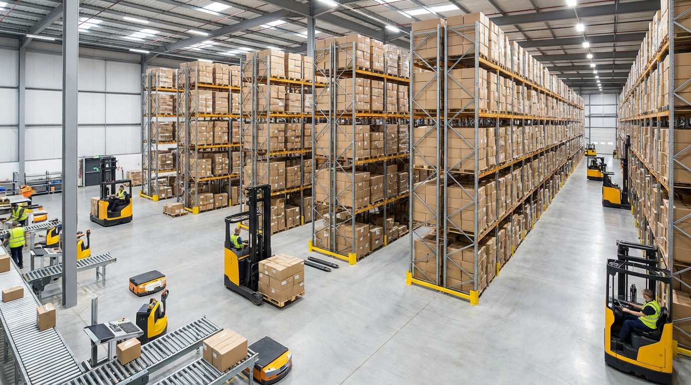
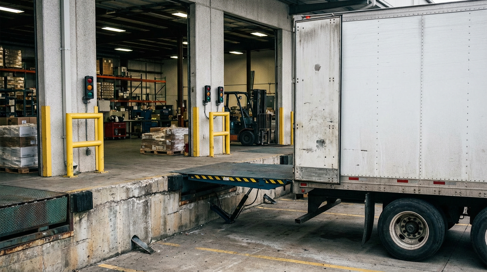

Logistics and warehousing companies—from 3PLs and distributors to fulfillment centers—rely on financing to purchase forklifts, racking, conveyors, and material handling equipment. Axiant Partners connects logistics and warehouse operators with lenders offering equipment financing, SBA loans, working capital, and more. Whether you run a distribution center, fulfillment warehouse, or last-mile facility, we match you with financing that fits your operation and cash flow.
Industry Overview
Logistics and warehousing businesses face high capital requirements for forklifts, pallet racking, conveyor systems, and material handling equipment. Labor costs, inventory, and facility overhead create cash flow pressure—especially when client payments lag or seasonal peaks strain capacity. Many operators need financing to acquire or upgrade equipment without draining reserves. Working capital helps cover payroll, fuel, and operating expenses during revenue gaps.
Forklifts and racking can cost $25,000–$150,000 or more; conveyor and automation systems add substantial expense. Equipment financing and working capital loans help logistics companies expand capacity and manage day-to-day operations. SBA loans support longer-term needs like real estate, facility buildouts, and business acquisition, while lines of credit provide flexibility for fuel, labor, and seasonal spikes.

How Logistics Companies Use Financing for Their Business
Logistics and warehousing companies use financing for forklifts, racking, and facility operations. Many finance forklifts, conveyors, and pallet racking through equipment loans—spreading the cost of material handling systems over their useful life. Working capital helps cover payroll, fuel, and operating expenses when client payments lag or seasonal peaks strain capacity. SBA loans support facility buildouts, real estate, and business or warehouse acquisition.
Seasonal demand and payment cycles create cash flow pressure. A 3PL might use a line of credit to cover labor and fuel during peak shipping season before invoices are paid. A fulfillment center might finance additional forklifts and racking to handle new client volume. Whether expanding a warehouse, adding automation, or managing day-to-day operations, logistics companies use financing to scale capacity and grow.
Logistics & Warehousing Financing Options
3PLs, distributors, and warehouse operators need financing for forklifts, racking, facility expansion, and seasonal demand. Whether you're searching for warehouse equipment financing, forklift loans, or logistics working capital, the right product depends on your use of funds and timeline.
Common Logistics & Warehousing Equipment That Businesses Finance
Logistics and warehousing companies frequently finance material handling and storage equipment. Below are common types, typical cost ranges, and why businesses finance them.

Forklifts
Forklifts are essential for loading, unloading, and moving pallets in warehouses and distribution centers. New forklifts typically cost $25,000–$80,000 or more depending on type and capacity. Financing helps operators add capacity or replace aging fleet.
How to finance a forklift
Pallet Racking & Storage
Pallet racking, shelving, and storage systems maximize warehouse density and organization. Racking typically costs $5,000–$100,000 or more depending on size and configuration. Financing helps operators expand storage capacity for growth.
How to finance pallet racking
Conveyor Systems
Conveyors move goods through receiving, picking, packing, and shipping. Systems typically cost $10,000–$200,000 or more depending on length and complexity. Financing helps operators automate and increase throughput.
How to finance conveyor systems
Dock Equipment
Dock levelers, doors, and truck restraints streamline loading and unloading. Dock equipment typically costs $5,000–$50,000 or more per door. Financing helps operators outfit new facilities or upgrade for safety and efficiency.
How to finance dock equipment
Pallet Jacks & Hand Trucks
Electric and manual pallet jacks, hand trucks, and carts support daily material handling. Equipment typically costs $500–$15,000 or more per unit. Financing helps operators scale fleet size for seasonal peaks or new facilities.
How to finance a pallet jack
Scanning & WMS Technology
Barcode scanners, mobile computers, and warehouse management systems track inventory and improve accuracy. Technology typically costs $2,000–$50,000 or more depending on scope. Financing helps operators modernize and reduce errors.
How to finance scanning and WMSEquipment Financing Guides for Logistics & Warehousing
Logistics and warehousing operators considering equipment loans often ask these questions. Our guides cover credit requirements, used equipment, rates, and approval timelines. For equipment-specific guides, see Equipment by Type. For a full overview, see Equipment Financing.
Apply for Logistics & Warehousing Business Financing
Logistics and warehousing companies need financing that fits contract cycles and seasonal demand. Axiant Partners connects 3PLs, distributors, and warehouse operators with lenders that offer equipment loans, working capital, SBA loans, and more. Submit your information once and we match you with programs suited to your business profile. Get matched with a lender or contact our team to discuss your needs.